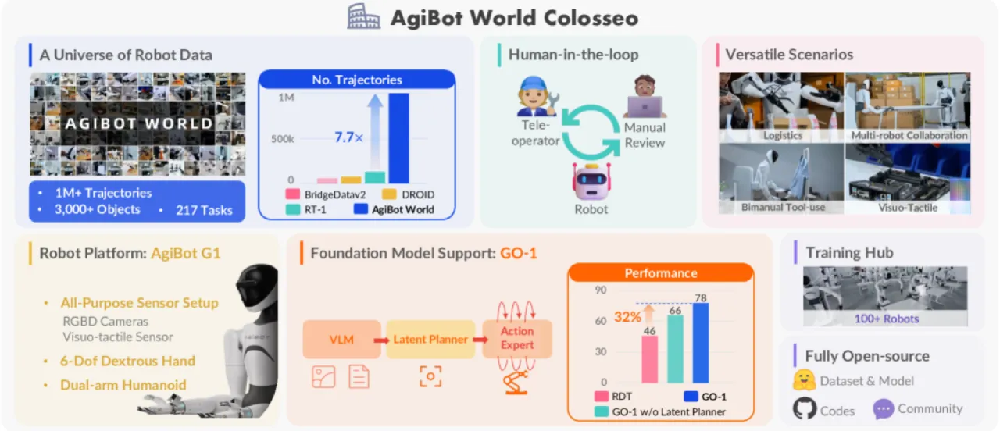
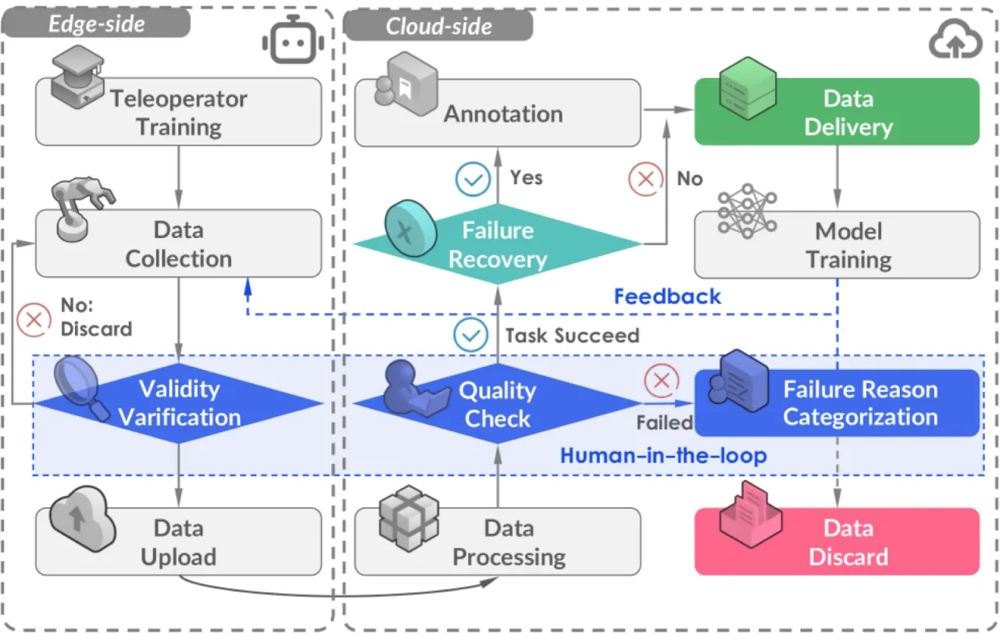
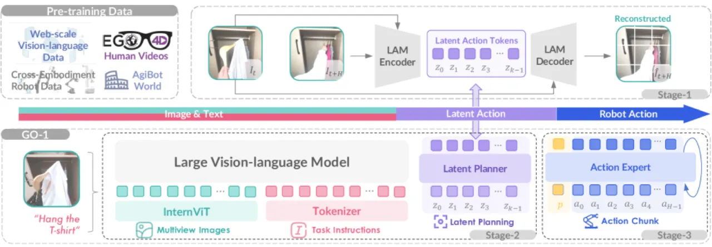
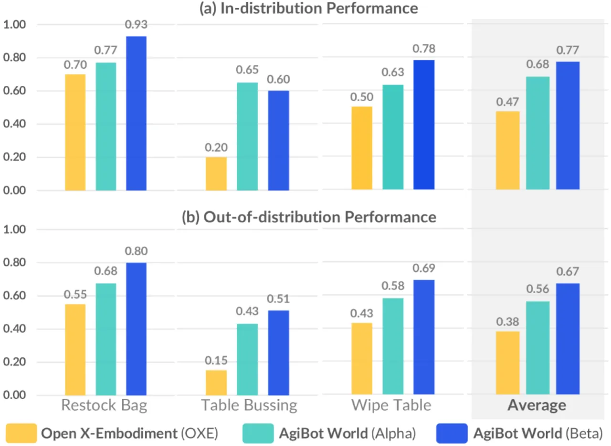
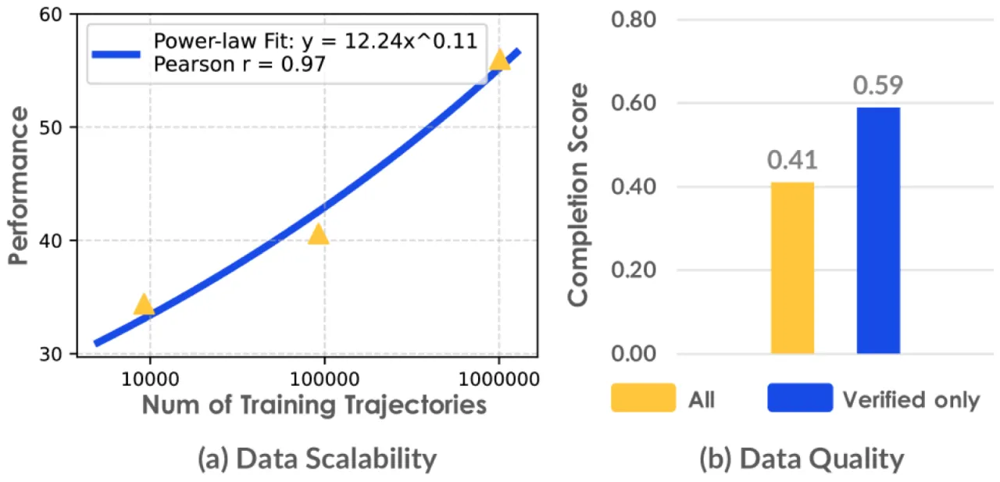

AgiBot World 汇集了超过 100 万条机器人操作轨迹，覆盖 217 项任务和五大部署场景， 并配套发布三阶段泛化策略模型 GO-1（Genie Operator-1）。 在域内与分布外（out-of-distribution）评估中，基于 AgiBot World 预训练的策略均比 Open X-Embodiment 基线提升约 30%。
机器人学习在大规模基础模型建设上远落后于 NLP 与计算机视觉，根本原因在于高质量数据采集的困难。 现有数据集往往受限于实验室受控环境、短时序任务和异构硬件，导致策略难以迁移至真实世界的多样场景。
"existing robot learning datasets remain constrained by their reliance on short-horizon tasks in highly controlled laboratory environments"

AgiBot World 从数据采集与策略建模两个维度同时发力： 前者通过人在环路（human-in-the-loop）的三阶段流程保证数据质量； 后者提出 Vision-Language-Latent-Action（ViLLA）三阶段框架，将网络规模视觉语言预训练与高频扩散控制解耦。


在互联网规模的异构视频数据上训练编码器-解码器式潜在动作模型： 编码器基于 inverse dynamics model 将相邻帧映射为潜在动作向量； 解码器基于 forward dynamics model 预测未来帧，从而学习与具身形式无关的通用动作表征。
以 InternVL2.5-2B 作为骨干（24 个 transformer 层），通过"逐层条件注入" （layer-by-layer conditioning）将视觉语言理解能力迁移至机器人规划，输出高层潜在规划信号， 实现跨具身的通用性。
利用扩散目标（diffusion objective）对低层连续动作分布进行建模， 以 action chunks（H = 30）输出高频关节控制指令，支持灵巧操作任务。
数据集、采集工具链、GO-1 模型权重及评测协议均已公开发布， 旨在推动机器人基础模型研究的可复现与可扩展性。
所有评估均在真实世界场景中进行，覆盖域内（in-domain）和分布外（out-of-distribution）两类设置， 并与 Open X-Embodiment 预训练基线及 RDT 进行对比。
| 评估设置 | Open X-Embodiment 预训练 | AgiBot World 预训练 | 提升 |
|---|---|---|---|
| 域内（in-domain） | 0.47 | 0.77 | +0.30 |
| 分布外（out-of-distribution） | 0.38 | 0.67 | +0.29 |
基于 AgiBot World 预训练的策略在两类场景下均实现 "average performance improvement of 30% over those trained on Open X-Embodiment"。

| 模型 | 复杂任务成功率 | 相对 RDT 提升 |
|---|---|---|
| RDT（prior best） | — | — |
| GO-1（ours） | > 60% | +32% |

论文明确指出："All evaluations are conducted in real-world scenarios. We are currently developing the simulation environment to facilitate fast and reproducible evaluation." 目前所有指标均来自真实机器人测试，缺乏可快速重现的仿真基准，限制了社区对结果的独立验证。
整套系统依赖 100 台定制双臂人形机器人与专用灵巧手、视触觉传感器， 数据采集与策略复现的硬件门槛较高，难以被一般研究机构直接复制。
Latent Action Model 虽声称学习"具身无关"的表征，但预训练视频数据与目标机器人之间的域差异（embodiment gap） 尚未被系统分析；在形态差异较大的机器人平台上的迁移效果有待验证。